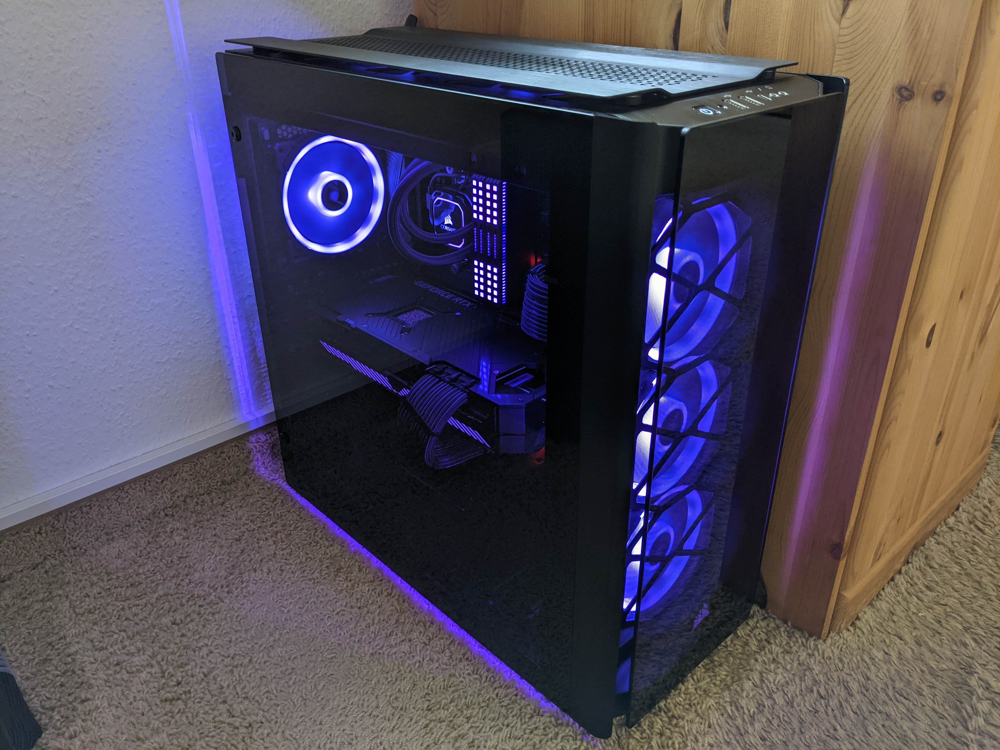

Games
Schon von klein auf haben Spiele mich in ihren Bann gezogen. Alles hat mit der ersten Xbox angefangen, neben einer Xbox Series X besitze ich daher auch heute noch viele alte Xbox-Classic Spiele. Am liebsten sind mir immer noch Rennspiele, aber auch das ein oder andere Action-Adventure sowie Strategiespiele.

Computer
Eine meiner weiteren Leidenschaften sind Computer. Egal ob es um das Konfigurieren von System oder das Reparieren geht, beides bereitet mir viel Spaß. So baue ich seit ein paar Jahren inzwischen meine Computersysteme selber auf.
Wandern
Wie das Design meiner Webseite vermuten lässt, gehe ich auch sehr gerne Wandern. So war ich schon in vielen Alpen-Regionen wandern und habe auch schon einen 3000er bestiegen.